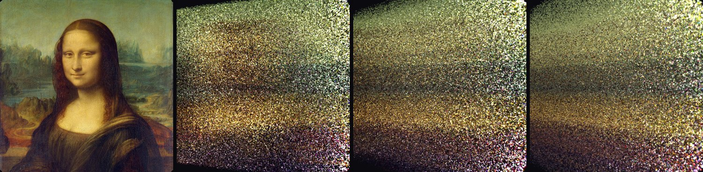
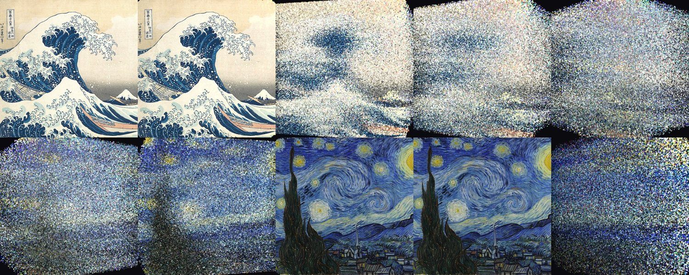
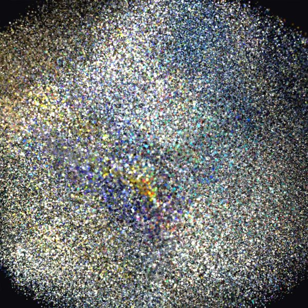
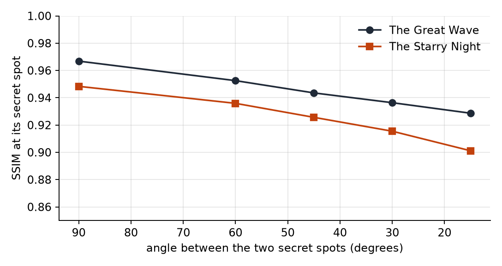
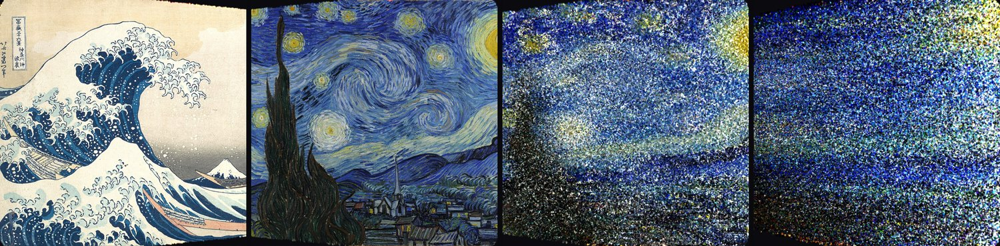
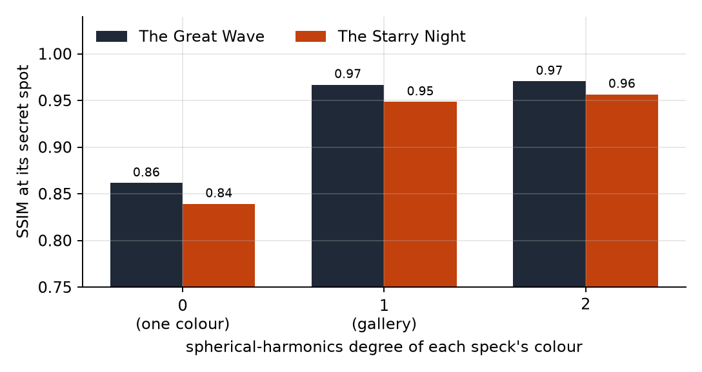
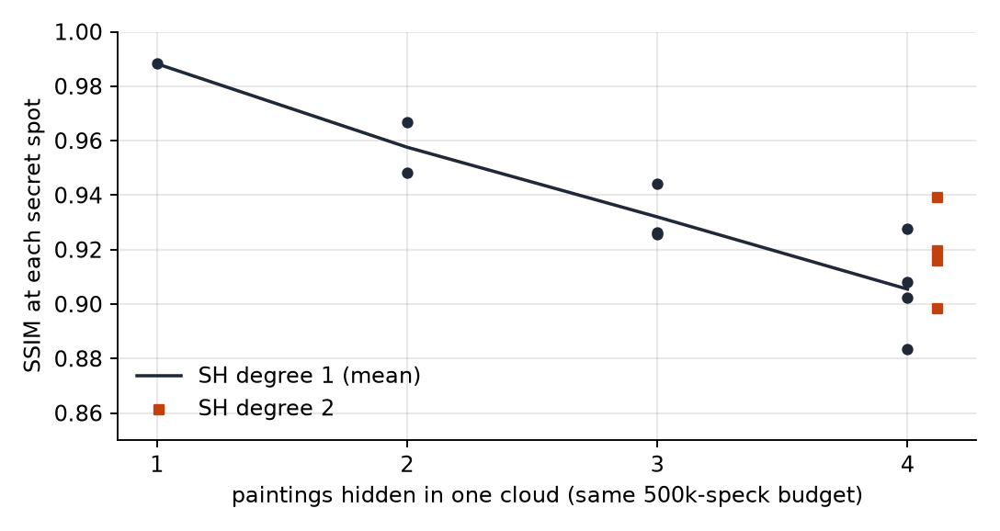
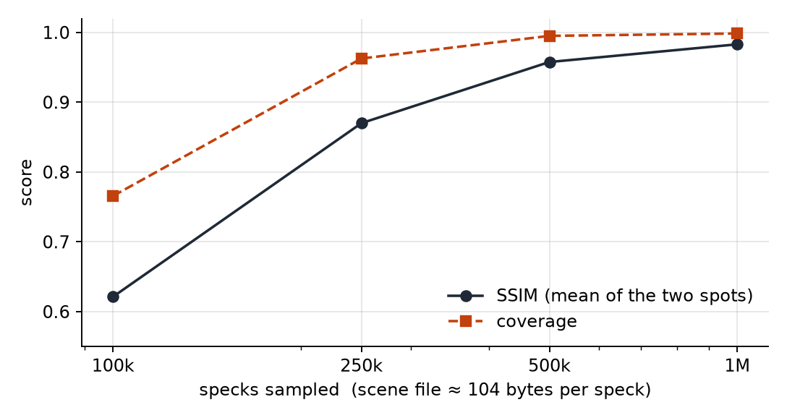

Hidden in Plain Sight
We hid famous paintings inside clouds of floating paint specks. From almost anywhere you see noise. From one exact spot, a painting snaps into place, and one cloud can hide three of them.
In this article
An old trick in a new medium
Near the bottom of Hans Holbein’s The Ambassadors (1533) there is a long grey smear. Stand at the right-hand edge of the painting, look back along the canvas, and the smear becomes a skull. This is anamorphosis: a picture that only reads from one point. Felice Varini does the same at the scale of buildings, painting fragments across walls and stairs that snap into a clean circle from one spot in the street.
Artists have pushed the idea in many directions since. Some take it off the surface entirely. Sculptors such as Michael Murphy hang hundreds of small objects so that they form a picture from one place in the room, and sometimes a second picture from the other side. Others put several pictures into one object. Lenticular prints show a different image at each viewing angle. Mitra and Pauly’s Shadow Art computes a sculpture whose shadows form different images. Visual anagrams use diffusion models to make one flat image that becomes another when you flip it.
| Work | Where the picture lives | Pictures | Colour |
|---|---|---|---|
| AnamorphosisHolbein; Varini | Paint on a surface | One | Full colour |
| Suspended-object sculpturee.g. Michael Murphy | Real objects hung in space | One, sometimes two | One fixed colour per object |
| Lenticular prints | A flat, ridged card | A few, by tilt | Full colour |
| Shadow ArtMitra & Pauly, 2009 | Shadows of one sculpture | Several | Black silhouettes |
| Multi-view Wire ArtHsiao et al., 2018 | One bent wire | Several | Line drawings |
| Visual AnagramsGeng, Park & Owens, 2024 | One flat image, flipped or rotated | Several | Full colour |
| This project | A cloud of specks floating in 3D | Up to three (four in a study) | Full colour, and each speck shows a different colour toward each spot |
Our medium is 3D Gaussian splatting (3DGS), the representation behind many recent 3D captures. A 3DGS scene is a list of small, coloured, semi-transparent blobs (Gaussians), and a fast rasteriser draws them from any camera. Normally the blobs are fitted to photos of a real place. We build a cloud from scratch instead. Like Shadow Art, we carve out the region of space that is consistent with every picture. Unlike shadows, splats can change colour with viewing direction, and that one difference is what lets a single cloud carry several full-colour paintings that you can walk around in a web browser.
Can one cloud of paint hold several paintings, each with its own secret spot?
It can. Our gallery has clouds that hide two paintings a quarter turn apart, and one that hides three. Each painting is sharp from its own spot (SSIM about 0.95, where 1 is a perfect copy) and dissolves into noise as you walk away. The rest of this article builds the method up one step at a time, measures how far it goes, and tells the story of how the idea changed along the way.
One painting: scatter it along the rays
Start with one painting and one secret camera: a pinhole camera with intrinsics \(K\) and pose \((R, \mathbf{o})\), looking at the centre of an empty scene. Every pixel \((u, v)\) of the painting defines a ray, its line of sight:
Anything placed anywhere on that ray lands on pixel \((u, v)\) in the secret view. So for each pixel we put one tiny Gaussian, coloured like the pixel, at a random depth along its ray: a uniformly random point on the stretch of the ray that passes through a ball around the scene centre (radius about half the camera distance). From the secret camera the specks tile the painting. From anywhere else, specks that shared a pixel slide apart.
Why the picture falls apart when you move
This is motion parallax, the effect stereo vision is built on. Step sideways by \(\Delta\), and a point at depth \(z\) shifts in the image by \(f\Delta / z\) pixels, where \(f\) is the focal length. Two specks that shared a pixel at depths \(z_1\) and \(z_2\) end up
pixels apart. The wider the spread of \(1/z\), the faster the painting dissolves. The ball spans roughly 5 to 15 units of depth from a camera 10 units out, enough that a step of a few percent of the distance already pulls neighbouring specks apart.
Here is the idea from above, with a seven-dot “painting”. Drag the slider to walk a second camera around the specks.
A toy version seen from above: seven picture dots, four specks on each dot’s line of sight. From the secret spot, every speck lands on its own dot; from anywhere else, near and far specks slide past each other. Real clouds use hundreds of thousands of specks.
Keep the specks small, then fit their colours
Our very first fit supervised only the secret view, and the optimiser did the lazy thing: it grew the Gaussians large and opaque. Big flat blobs fill a coherent cone of space, so the side views showed a smeared copy of the picture instead of noise. The lesson shaped everything after it: judge an illusion by the views you don’t supervise.
The fix is to bound each Gaussian’s size in secret-view pixels at its own depth. One pixel at depth \(z\) covers \(z/f\) world units, so the standard deviation is
with \(p\) the free parameter. A far speck can be physically larger than a near one, but from the secret spot every speck covers about one pixel. The lower bound came from Mip-Splatting: below about 0.3 pixels a Gaussian is mostly the renderer’s anti-aliasing blur, so it looks different at every screen size. In our early scenes, before the floor, 7 to 31% of specks had shrunk that far.
Placement alone already gives a recognisable picture, but overlapping specks blur it. A short fit in gsplat sharpens it: Adam on each speck’s colour, opacity and size, minimising the standard 3DGS loss between the render \(I\) and the painting \(T\),
Positions stay frozen. The geometry, and with it the scramble from every other angle, is decided by the placement; the fit only touches appearance. On the Mona Lisa (400k specks) the secret view reaches SSIM 0.95. Then we looked at it from the side.

Rows stay rows
From the side, the cloud reads as the painting extruded into a tube of horizontal bands: green sky on top, the dark dress at the bottom. That gives the trick away. Our first guess was that the depth range was to blame. We had started with a long slab of depths (3 to 30 units); confining the specks to a ball, in the hope of a round puff of dust, looked almost the same. The cause is geometric, and no choice of depths can remove it.
When the viewer moves, a speck seen at pixel \(\mathbf{p}\) by the secret camera can only appear on its epipolar line in the new view; its depth decides only where on that line. For a sideways step the epipolar lines are exactly horizontal. For an orbit around the vertical axis they are horizontal on the horizon row and fan out slowly above and below it. Either way, depth can shuffle a row’s pixels left and right, but cannot move them to another row.
Depth can scramble a picture’s columns. It can never scramble its rows.
We could have fought this. Instead it became the key to the rest of the project: if the side view has structure anyway, why not make it show something on purpose? First, though, a question every visitor to the gallery runs into.
How far can you wander?
If a painting appears only from one mathematically exact point, nobody will ever find it. If it appears from everywhere, it is not hidden. What matters is the size of the reveal zone: how far you can step away from the spot and still recognise the painting.
A metric that doesn’t flatter
SSIM against the painting was our first instinct, and it misled us: orbited 120° away, with the picture completely gone, it still reported about 0.5, because the dark background of the render matches the dark border around the picture. So we score only what the cloud contributes, only where the painting is. With \(I_v\) the render from view \(v\), \(B\) the plain background, \(T\) the painting and \(M\) its pixels, let \(a = \mathrm{gray}(I_v - B)\) and \(b = \mathrm{gray}(T - B)\), each made zero-mean over \(M\). The recognisability is their normalised cross-correlation (NCC):
It is 1 when the painting is fully there and near 0 when it is scrambled. It is strict: a perfect painting shifted by two pixels also scores low. For a reveal-zone curve that is the right kind of strict, because the painting really does slide apart as you move.
Training with a wobbly camera
Illusion3D makes illusions robust by jittering the camera during optimisation, and we borrowed the idea. At step \(t\) of \(T\), the secret camera is moved by a random offset inside a ball of radius
still looking at the centre. The fit first gets the painting right, then learns to hold it together under small moves. We measured both versions on two single-painting clouds:

| Cloud | At the spot | 1% | 5% | 10% | 50% |
|---|---|---|---|---|---|
| Pearl Earring, sharp | 1.00 | 0.93 | 0.77 | 0.63 | 0.16 |
| Pearl Earring, jitter | 0.99 | 0.99 | 0.98 | 0.93 | 0.64 |
| Great Wave, sharp | 0.98 | 0.77 | 0.57 | 0.46 | 0.17 |
| Great Wave, jitter | 0.89 | 0.89 | 0.80 | 0.70 | 0.27 |
Jitter widens the zone a lot. At a 5% step the Pearl Earring goes from 0.77 to 0.98. The cost depends on the painting. Vermeer’s soft, smooth portrait loses nothing at the spot. Hokusai’s fine spray and linework do: the Wave drops from 0.98 to 0.89, because detail that small cannot survive a camera that will not hold still. (Diffusion Illusions makes the same observation: pixel-space optimisation hides information in brittle high frequencies.)
Jitter also changes the cloud itself. Specks far from the middle depth move the most under the wobble, so the optimiser fades them out; the jittered Wave keeps 317k specks against 358k for the sharp one, and the cloud flattens towards a billboard. The jittered Pearl Earring still scores 0.40 from 60° away. Jitter trades surprise for discoverability. The gallery uses sharp clouds, and gives visitors a warmer/colder meter and a “show me” button instead.
Several paintings in one cloud
The feedback on the one-painting version was blunt: “the dots just form a cylinder; it doesn’t seem that impressive.” Fair. Every speck lies on one of the secret camera’s lines of sight, and from the side you see that bundle. Rows stay rows, so the side view will have structure whatever we do. The idea is to stop fighting the structure and give it a job: make the side view show a second painting.
Stereo triangulation, run backwards
In stereo you are given a pixel in each of two cameras and triangulate the 3D point that projects to both. We run it backwards: we choose 3D points so that they land on painting A’s pixels in camera A and on painting B’s pixels in camera B, a quarter turn away. With \(\pi_k\) camera \(k\)’s projection and \(\alpha_k\) painting \(k\)’s mask, a point is a valid speck only if every camera sees its own painting there:
The set of such points is the intersection of the cameras’ cones of sight: a visual hull, the object behind space carving and behind Shadow Art. Shadow Art uses the hull to cast shadows. We use it for colour, which brings a freedom that shadows don’t have: each speck can show a different colour toward each camera.


Sampling the hull
We never build a voxel grid; we sample. Pick a random pixel in camera \(s\), take its unit ray \(\mathbf{d}\) from the camera centre \(\mathbf{o}\), and intersect it with a ball of radius \(R = 0.45\,D\) around the scene centre \(\mathbf{c}\), where \(D = 10\) is the camera distance. With
the ray is inside the ball for \(t \in [\,b - h,\; b + h\,]\). Draw \(t\) uniformly on that chord, project \(\mathbf{X} = \mathbf{o} + t\,\mathbf{d}\) into every other camera, and keep it if it lands on the painting there. Seeds are drawn evenly from each camera, so no painting gets more than its share. It is the same ball as for one painting, and it keeps every speck well away from every camera, so none can loom large from a secret spot.
Why the paintings are square
Rows stay rows now works for us, but it also constrains us. Two cameras orbiting the vertical axis at the same height share rows: a speck on row \(v\) of painting A lands near row \(v\) of painting B. If A has paint in a row where B has none, those pixels can never be covered. It is the epipolar constraint again. Our fix is simple: square crops that fill the frame, so every row has paint in every view. Coverage, the share of each painting’s pixels with a speck within one pixel, is then 0.987 to 0.997 in every gallery scene.
One speck, several colours
A speck inside the hull is wanted by every painting, and they rarely agree on its colour. 3DGS already has the tool for this: view-dependent colour, stored as spherical harmonics (SH). At degree 1 this is simpler than it sounds. Per colour channel, the colour a speck shows along unit viewing direction \(\mathbf{d}\) is a base colour plus a linear function of the direction:
(The four numbers \(a, \mathbf{g}\) are a regrouping of the four degree-1 SH coefficients that 3DGS stores per channel.)
Asking a speck to show colour \(c_k\) toward camera \(k\) is one linear equation, \(a + \mathbf{g}\cdot\mathbf{d}_k = c_k\), in four unknowns. Two cameras leave plenty of slack. Three roughly perpendicular cameras (front, side, top) still leave the base colour free to keep everything in range. A fourth camera makes the system exactly determined: four equations, four unknowns, solvable whenever the four directions are not coplanar, and the colours at the four spots are then exact. So on paper degree 1 can carry four paintings, and only a fifth needs a richer colour model. We did not see this at first; the capacity study is where it caught us out.
The same algebra predicts what you see between spots. For orthogonal directions \(\mathbf{d}_A, \mathbf{d}_B\) and the halfway direction \(\mathbf{m} = (\mathbf{d}_A + \mathbf{d}_B)/\sqrt{2}\),
Halfway round, every speck shows a blend of its two target colours. Neighbouring specks come from unrelated parts of the two paintings, so the blend reads as noise: good for hiding, if a little muddy.
One joint fit
As before, a short gsplat fit cleans up, now summing the loss over all secret views:
The base colour starts at the average of what the cameras want and the directional terms at zero. Sizes are bounded by \([0.4, 1.5]\) pixels at the distance to the nearest secret camera, positions stay frozen, and specks that fade below 0.05 opacity are dropped. The gallery scenes use 1500 Adam steps at 768×768 per view.
Results
Our first pair put The Great Wave and The Starry Night a quarter turn apart: 320k specks, 1000 steps, no size floor. It reached SSIM 0.93 and 0.90 at the two spots, and the views in between were scrambled. The tube was gone.

With the size floor and 500k specks, the same pair reached 0.97 and 0.95 at 99.5% coverage, with the step count unchanged. Then we added a third camera, looking down from 80° above, with Girl with a Pearl Earring:


| Scene | Specks (sampled / kept) | Coverage | SSIM |
|---|---|---|---|
| Wave + Starry Night, first versionno size floor, 1000 steps | 320k / 306k | 0.98 · 0.98 | 0.93 · 0.90 |
| Wave + Starry Night, with size floor1000 steps; the studies’ baseline | 500k / 460k | 0.995 · 0.995 | 0.97 · 0.95 |
| TrioWave, Starry Night, Pearl Earring | 600k / 555k | 0.991 · 0.992 · 0.987 | 0.96 · 0.95 · 0.95 |
| Pair IGrande Jatte, Impression, Sunrise | 500k / 472k | 0.995 · 0.995 | 0.95 · 0.96 |
| Pair IIThe Kiss, The Scream | 500k / 481k | 0.995 · 0.995 | 0.96 · 0.98 |
| Pair IIIBirth of Venus, Night Watch | 500k / 474k | 0.995 · 0.995 | 0.97 · 0.99 |
| SoloMona Lisa; one painting, one camera | 400k / 379k | 0.997 | 0.95 |
The gallery has five clouds, and each painting appears in exactly one: Solo (one painting, so you can see the tube for yourself), Pair I, Pair II, Pair III and Trio.

The three-painting cloud, live.
or open it full screenPushing it: four studies
The gallery shows that the method works. These studies ask how far. Each changes one thing at a time from the same baseline: The Great Wave and The Starry Night, 500k sampled specks, SH degree 1, 1000 steps. The baseline appears in every table.
1. Separation: how close can two spots be?
At 90° the two cameras’ rays cross at right angles. Moving the second spot closer makes the cones overlap more, and the two colours a speck must show come from nearby directions, leaving the linear term less room to tell them apart.
| Angle between spots | 90° | 60° | 45° | 30° | 15° |
|---|---|---|---|---|---|
| SSIM (Wave · Starry Night) | 0.967 · 0.948 | 0.953 · 0.936 | 0.944 · 0.926 | 0.936 · 0.915 | 0.929 · 0.901 |

The spots themselves barely suffer. What changes is the walk between them:

2. Colour model: does view-dependent colour matter?
At SH degree 0 a speck has one colour from every direction, so the joint fit can only compromise. Degree 2 adds five terms per channel, which could clean up the views in between or spill over and hurt them.
| SH degree | 0 (one colour) | 1 (gallery) | 2 |
|---|---|---|---|
| SSIM (Wave · Starry Night) | 0.861 · 0.839 | 0.967 · 0.948 | 0.970 · 0.956 |

3. Capacity: how many paintings fit in one cloud?
Same budget, one to four paintings: front, side, back and top. Counting “three directional terms”, we expected degree 1 to break at four paintings, so the four-painting cloud also runs at degree 2.
| Paintings | 1 | 2 | 3 | 4 (SH 1) | 4 (SH 2) |
|---|---|---|---|---|---|
| SSIM at each spot | 0.988 | 0.967 · 0.948 | 0.944 · 0.925 · 0.926 | 0.928 · 0.902 · 0.884 · 0.908 | 0.939 · 0.916 · 0.898 · 0.920 |

The cliff never came. Four paintings still work at degree 1, with the weakest spot (the back) at 0.88. Writing the algebra out properly, as in the section above, explains why: the base colour is a fourth free number, so four directions are still exactly solvable. Our prediction had counted only the three directional terms. The decline that remains is a gentle slope, about 0.02–0.03 per painting, and it comes from somewhere else: coverage also slips from 0.999 to about 0.98, as the same budget is shared by more paintings. This was the most useful surprise of the project: a wrong prediction, caught by measuring instead of assuming.
4. Budget: how many specks are needed?
Fewer specks mean smaller files, but each speck is capped at 1.5 pixels, so too few leave holes.
| Specks sampled | 100k | 250k | 500k | 1M |
|---|---|---|---|---|
| SSIM (Wave · Starry Night) | 0.626 · 0.617 | 0.887 · 0.853 | 0.967 · 0.948 | 0.987 · 0.979 |
| Coverage | 0.77 | 0.96 | 0.995 | 0.998 |

How the idea evolved
The finished method looks inevitable in hindsight. It was not. Each step below was a result that surprised us, and a decision about what to do with it.
- A blob, not a painting. The first fit, supervised from one view only, grew big opaque Gaussians that still showed the picture from nearby angles. Decision: cap speck size, and judge every result by the views we never trained on.
- A tube. Small specks still made the side view an extruded painting, and a ball of specks changed nothing. Decision: stop patching and work out why: rows stay rows.
- “It’s just a cylinder.” Feedback on the one-painting cloud was that it wasn’t impressive. Decision: stop treating the side view as a flaw and use it for a second painting. This is the pivot the project is built on.
- A metric that flattered us. Decision: replace SSIM with masked NCC before trusting any reveal-zone number.
- From drawings to paintings. Early tests used simple drawings. Decision: build the whole gallery from ten public-domain paintings, because a recognisable masterpiece is the moment the trick lands, and give every cloud a neutral title so the gallery doesn’t spoil it.
- Three, then the question of four. Three paintings worked. Decision: instead of claiming more, run four controlled studies. The capacity study overturned our own prediction, and taught us to redo the algebra.
Working with coding agents
We built this with coding agents, as the course encourages. Agents wrote most of the code and ran the experiments on a Colab T4 GPU. We read the contact sheets and numbers and chose what to try next; the list above is those choices. Before publishing, a review agent checked the draft against the course rubric and the result files, and flagged figures that still used test drawings and numbers that had drifted from the data, which we fixed. PROCESS.md and the git history in our repository record each step.
What we borrowed
Almost no single piece here is new. What is ours is the combination: visual-hull carving plus view-dependent splat colour, so that several full-colour paintings share one cloud you can walk around, together with measurements of how far each reveal reaches. These are the techniques we took, and where they went.
| Work | What we took |
|---|---|
| 3D Gaussian Splatting and gsplatKerbl et al., SIGGRAPH 2023; Ye et al., 2024 | The representation, its SH colour model, the L1 + D-SSIM loss, and the differentiable rasteriser we train with. SH colour was designed for realistic reflections; we use it to hide pictures. |
| Shadow ArtMitra & Pauly, SIGGRAPH Asia 2009 | The hull: keep only what is consistent with every view. Our carving is its colour version. Its registration of the pictures before carving is on our next-steps list. |
| Multi-view Wire ArtHsiao, Huang & Chu, TOG 2018 | The same consistency-across-views idea for wire. Its greedy filling of uncovered pixels is on our next-steps list. |
| Illusion3DFeng et al., 2024 | Scheduled camera jitter during optimisation: our reveal-zone knob. |
| Mip-SplattingYu et al., CVPR 2024 | Why sub-pixel Gaussians misbehave; the size floor. |
| ComplicitSplatHull et al., 2025 | Evidence that SH colour can hide content by direction, and that low-order SH spills over to nearby angles. |
Limitations and next steps
- The views between spots are noisy but muddy. At degree 1, every in-between colour is a blend of the targets. Degree 2 or 3, with a weak loss pulling in-between views toward the background, might give darker, cleaner gaps, at the risk of spill-over.
- Reveal zones are measured on single-painting clouds. For the multi-painting clouds, “scrambled in between” is still judged from contact sheets. NCC curves for those clouds, and a small study of whether people actually recognise the paintings, are the next measurements to make.
- Paintings must share rows. Full-frame square crops make this easy. A small object against a big background would lose coverage; registering the pictures before carving, as Shadow Art does, would fix most of it.
- One painting still looks like a tube. Placing specks on a surface instead of in a volume would make the side view read as a painted object, the way a Varini piece does.
- Files are big. 39 to 58 MB per gallery scene, about 100 bytes per speck. Quantising colours and sizes is the obvious fix.
Credits
The paintings
All ten are public domain, from Wikimedia Commons; we use square crops.
- The Great Wave off Kanagawa, Katsushika Hokusai, c. 1831 source
- The Starry Night, Vincent van Gogh, 1889 source
- Girl with a Pearl Earring, Johannes Vermeer, c. 1665 source
- Mona Lisa, Leonardo da Vinci, c. 1503–1519 source
- A Sunday on La Grande Jatte, Georges Seurat, 1884–86 source
- Impression, Sunrise, Claude Monet, 1872 source
- The Kiss, Gustav Klimt, 1907–08 source
- The Scream, Edvard Munch, 1893 source
- The Birth of Venus, Sandro Botticelli, c. 1485 source
- The Night Watch, Rembrandt van Rijn, 1642 source


Tools
gsplat and PyTorch for fitting; three.js and Spark for the browser viewer; Google Colab (T4 GPU) for training; NumPy, Pillow and matplotlib for everything else; KaTeX for the equations on this page.